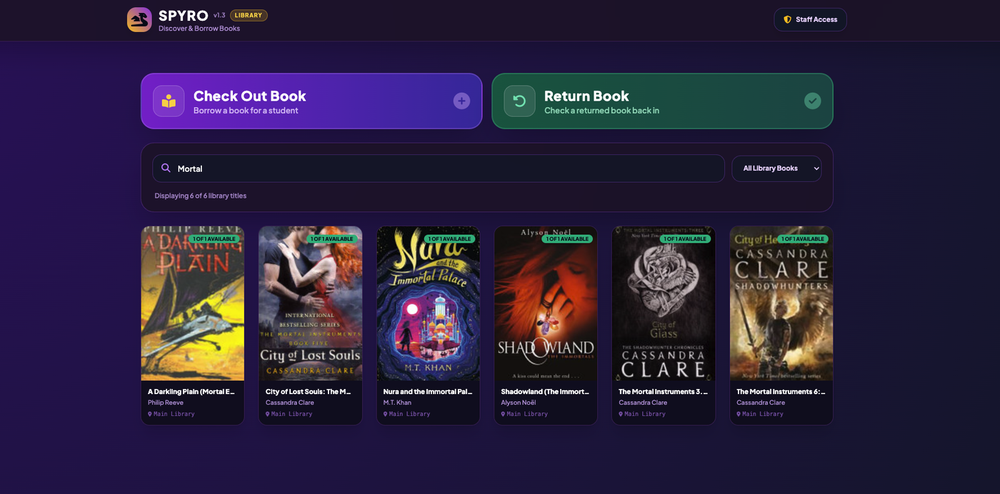
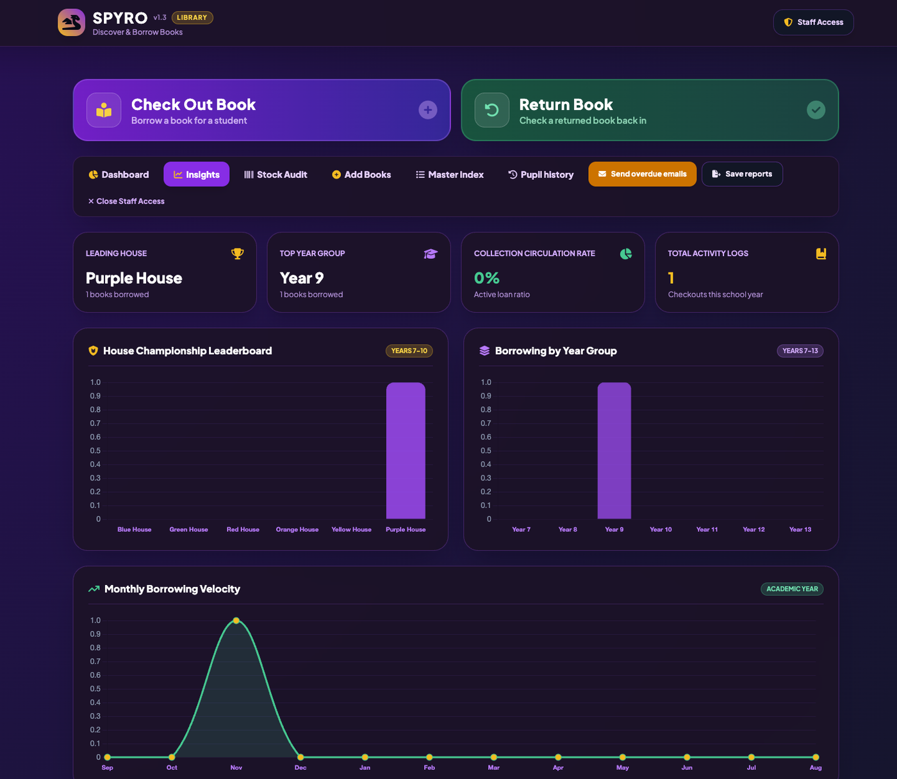
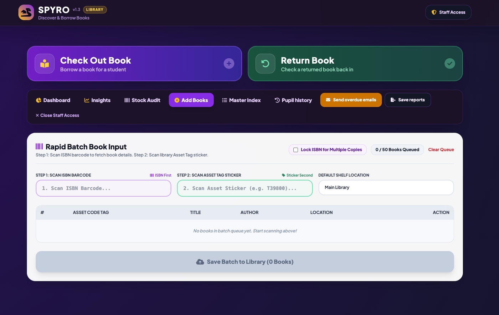
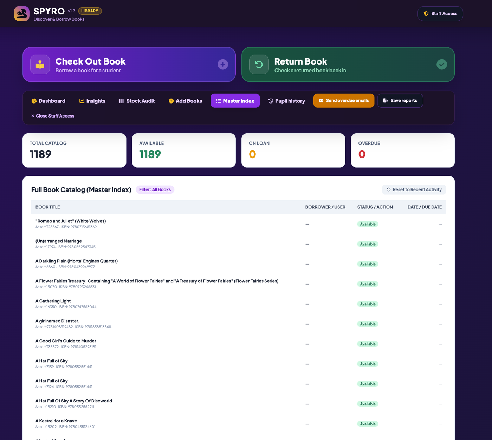

02
Spyro
School library system · Google Apps Script ·
Spyro is the page the library desk works in. Staff search the catalogue, check a book out, and take it back by scanning the asset-tag sticker on that copy. The pupil list is pulled from your school MIS, including leavers, so a book can still be traced after someone has left.
Lending and returning stay on the front page. The staff area — dashboard, insights, stock audit, adding books, the full catalogue, pupil history, overdue emails and saved reports — opens for the signed-in Google account.
Key features
- Search by title, author, shelf or barcode, and filter to copies that are on the shelf.
- Check out and return from large desk buttons, with a receipt left on screen and the cursor ready for the next scan.
- Find a pupil by name, UPN, registration form, or the MIS student ID printed on the library card.
- Lend for a set number of days (14 unless the school changes it) and stop at a per-pupil limit, usually 3, with a staff override for one extra book.
- Tie each loan and return to the asset tag on that copy, so a shared ISBN cannot clear the wrong book.
- Renew from the on-loan list. A book that is already overdue has to come back first.
- Add copies by looking up an ISBN, then scanning each asset tag. A stock audit can record that a sticker was seen without changing the loan.
- Show the whole catalogue, pupil history, and leavers who still have books out.
- Send overdue email as one message per family, and skip a book that was already emailed in the last week.
- Scan with a USB scanner, or with the camera (including a photo when the live camera is blocked).
- Save an overdue report and an insights report back to the spreadsheet, ready to print or save as PDF.
Screens




A demo is available on request. Contact.
The CRASH pictures use made-up names and serials. The Spyro pictures show books only.